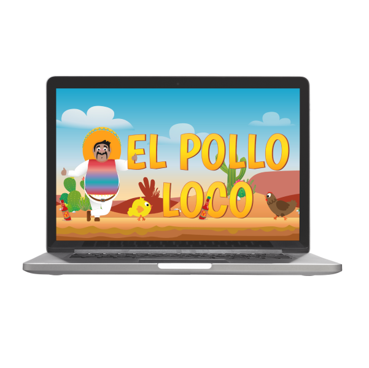

Join
Join is a Kanban software that simplifies project management, optimizes workflows, and boosts productivity. With customizable boards and automated workflows, teams can track progress and collaborate seamlessly.
#HTML
#CSS
#JavaScript

Pokedex
Based on the PokeAPI a simple library that provides and catalogues pokemon information.
#HTML
#CSS
#JavaScript
#API

El Pollo Loco
In El Pollo Loco, players help Pepe fight off chickens using a throwable glass bottle and the ability to jump on them. It's a unique and fun game for all ages.
#HTML
#CSS
#JavaScript